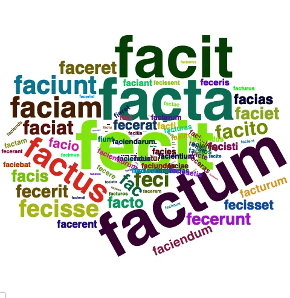
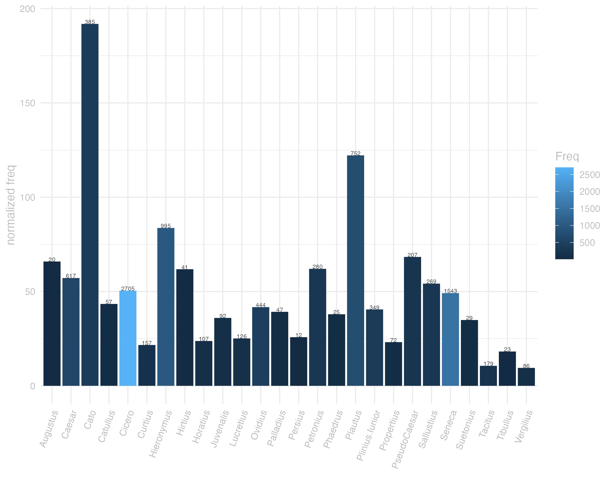
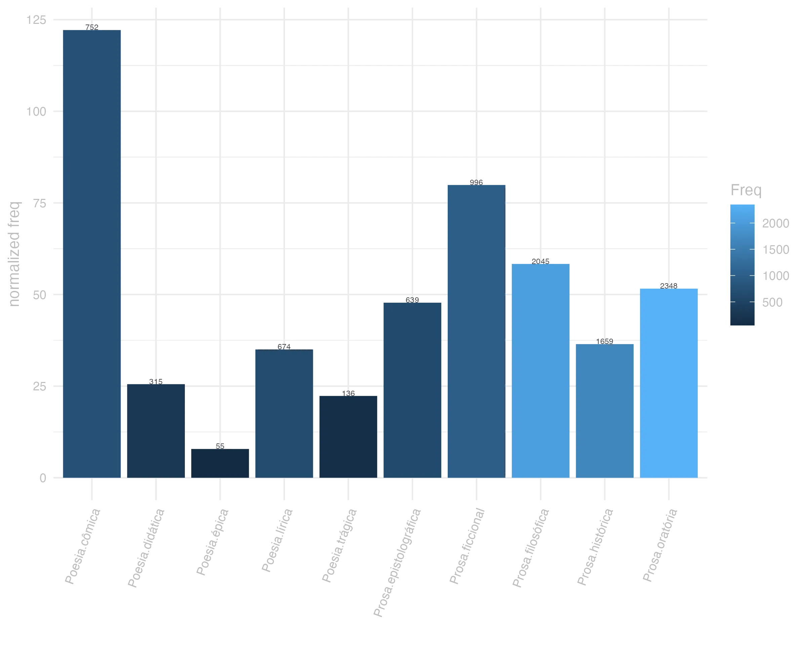
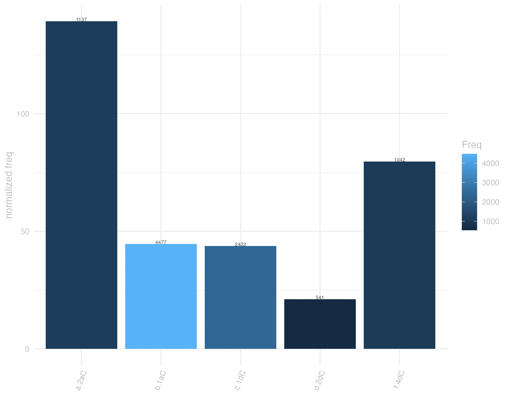

17 facio
17.0.0.1 forma
Classe: verbo
Flexão: 5ª conjugação (tema em -ĭ- breve)
F Face Plaut. imper. por Fac
V Facio -is ejus passivum est Fio: fit in compositis, quae non mutant a in i, ut: Calefacio, Calefio, & c.
F Facio -is feci factum -ere
F Faxem Plaut. por Fecissem
F Faxim -is -it -imus -itis -int Ter. por Faciam, as, & c. e Fecerim, & c.
V Faxim -is et c. pro Faciam, facias, vel fécerim, féceris, & c. Faxo, pro fut. Indic. faciam.
F Faxo Virg. Plaut. por Faciam, es, et, & c. -is -it -unt
facio presente | indicativo | 1ª pessoa singular | voz ativa
facere presente | infinitivo | ativo
faciet futuro | indicativo | 3ª pessoa singular | voz ativa
feci, fecei pretérito perfeito | indicativo | 1ª pessoa singular | voz ativa
factum particípio passado | nominativo neutro singular
facturum particípio futuro | nominativo neutro singular

17.0.0.2 significado
Grupo semântico: Fazer, Criar
F 2 estimar, prezar.
V 1 fazer, estimar, dar, etc
F 1 fazer, executar. Cic.
F 3 sacrificar.
V 2 ponitur etiam pro Sacrificare
V 3 ponitur etiam Factum in responsione pro Ita
lexemas: abastecer, fornecer, prover, suprir
categoria: posse
valências: [ACT,PAT] ou [ACT,EFF,PAT] ou [ACT,ADDR,PAT] ou [ACT,PAT,ADDR] ou [ACT,MEANS,PAT]
synset_id: 02327200-v
lexemas: achar, esperar, pensar, supor
categoria: cognição
conceito: imaginar, acreditar, ou supor
valências: [ACT,PAT] ou [ACT,PAT,EFF] ou [ACT] ou [ACT,EFF,PAT]
synset_id: 00631737-v
lexemas: adicionar, chegar, totalizar
categoria: estado
conceito: somar em número ou quantidade ate chegar num total
valências: [ACT,ADDR,PAT] ou [ACT,PAT]
synset_id: 02645007-v
lexemas: agir, atuar, comportar-se, parecer
categoria: corpo
conceito: agir de uma certa forma; comportar-se ou conduzir-se;
valências: [ACT,PAT] ou [ACT,MANN] ou [ACT,EFF,PAT] ou [ACT]
synset_id: 00010435-v
lexemas: alcançar, atingir, chegar a, efectuar, efetuar, obter, realizar
categoria: relação social
conceito: obter com esforço
valências: [ACT,PAT] ou [ACT,DIR3] ou [ACT]
synset_id: 02526085-v
lexemas: aparentar, fingir, pretextar, simular
categoria: comunicação
conceito: fazer crer com a intenção de enganar
valências: [ACT,ADDR,PAT] ou [ACT] ou [ACT,PAT]
synset_id: 00838043-v
lexemas: aprontar, preparar
categoria: mudança
conceito: ficar pronto ou adequado, ou equipar tendo um propósito particular ou para algum uso, evento, etc
valências: [ACT,EFF,PAT] ou [ACT] ou [ACT,PAT] ou [ACT,ADDR,PAT] ou [ACT,LOC,PAT]
synset_id: 00406243-v
lexemas: arranjar, realizar
categoria: criação
conceito: planejar, organizar e realizar (um evento)
valências: [ACT,PAT]
synset_id: 01648126-v
lexemas: atingir, cumprir, efetuar, executar, levar a cabo, realizar
categoria: criação
valências: [ACT,PAT]
synset_id: 01640855-v
lexemas: causar, criar, fazer, provocar
categoria: criação
valências: [ACT,EFF,PAT] ou [ACT,PAT]
synset_id: 01617192-v
lexemas: causar, fazer, produzir, provocar
categoria: criação
valências: [ACT,PAT] ou [ACT,EFF,PAT]
synset_id: 01752884-v
lexemas: causar, fazer, provocar
categoria: criação
conceito: dar origem a
valências: [ACT,PAT] ou [ACT,PAT,ADDR] ou [ACT,ADDR,PAT] ou [ACT,EFF,PAT]
synset_id: 01645601-v
lexemas: classificar
categoria: cognição
conceito: organizar ou ordenar por classes ou categorias
valências: [ACT,PAT]
synset_id: 00654625-v
lexemas: compor, constituir, enquadrar, estabelecer
categoria: estado
conceito: compor ou representar
valências: [ACT] ou [ACT,PAT]
synset_id: 02621395-v
lexemas: compor, escrever
categoria: criação
conceito: produzir uma obra literária
valências: [ACT,PAT] ou [ACT,PAT,REG]
synset_id: 01698271-v
lexemas: constituir, estabelecer, fundar
categoria: criação
conceito: criar ou estabelecer as bases
valências: [ACT,PAT] ou [ACT,PAT,LOC]
synset_id: 01647229-v
lexemas: construir, criar, fazer, produzir
categoria: criação
valências: [ACT,PAT] ou [ACT,EFF,PAT]
synset_id: 01621555-v
lexemas: construir, edificar
categoria: criação
valências: [ACT,PAT] ou [ACT,PAT,MEANS] ou [ACT,ADDR,PAT] ou [ACT,MEANS,PAT]
synset_id: 01654628-v
lexemas: contrair, sofrer, ter
categoria: corpo
conceito: ser acometido de lesões e doenças
valências: [ACT,PAT] ou [ACT,CAUS]
synset_id: 00065639-v
lexemas: controlar, operar
categoria: contato
conceito: controlar e causar o funcionamento
valências: [ACT,PAT]
synset_id: 01224744-v
lexemas: criar
categoria: criação
valências: [ACT,PAT]
synset_id: 01753788-v
lexemas: cumprir, desempenhar, realizar
categoria: relação social
valências: [ACT,PAT] ou [ACT,PAT,BEN]
synset_id: 02561995-v
lexemas: dar, fazer
categoria: criação
valências: [ACT,PAT]
synset_id: 01733477-v
lexemas: dar, prover
categoria: posse
conceito: ser a causa ou fonte de
valências: [ACT,EFF,PAT] ou [ACT,PAT,ADDR]
synset_id: 02339171-v
lexemas: deixar, fazer
categoria: mudança
conceito: dar certa propriedades a algo
valências: [ACT,PAT] ou [ACT,EFF,PAT]
synset_id: 00120316-v
lexemas: desempenhar, executar, fazer
categoria: criação
conceito: realizar ou executar uma ação
valências: [ACT,PAT] ou [ACT]
synset_id: 01712704-v
lexemas: em atividade, se movimentando, mover
categoria: corpo
conceito: estar em um estado de ação
valências: [ACT]
synset_id: 00014549-v
lexemas: emitir, soltar
categoria: comunicação
conceito: expressar de forma audível; emitir sons (não necessariamente palavras)
valências: [ACT,PAT]
synset_id: 00983824-v
lexemas: exercer, praticar
categoria: relação social
valências: [ACT,PAT]
synset_id: 02568672-v
lexemas: fazer crescer
categoria: mudança
valências: [ACT,PAT]
synset_id: 00253761-v
lexemas: funcionar
categoria: relação social
valências: [ACT,EFF]
synset_id: 02525447-v
lexemas: incorrer
categoria: estado
valências: [ACT,PAT]
synset_id: 02721031-v
lexemas: interessar
categoria: estado
valências: [ACT,PAT]
synset_id: 02678663-v
lexemas: nomear, propor
categoria: relação social
conceito: designar com um cargo
valências: [ACT,EFF,PAT] ou [ACT,PAT]
synset_id: 02396716-v
lexemas: passar
categoria: estado
valências: [ACT,PAT] ou [ACT,MANN] ou [ACT,PAT,DIR1,DIR3] ou [ACT,DIR1,DIR3]
synset_id: 02708420-v
lexemas: por, fazer, construir, colocar, deitar, delinear, pôr, estabelecer, instituir
categoria: cognição
conceito: instituir, promulgar, ou estabelecer
valências: [ACT,PAT] ou [ACT,LOC,PAT]
synset_id: 00665476-v
lexemas: representar, retratar
categoria: criação
valências: [ACT,PAT]
synset_id: 01688771-v
lexemas: tratar
categoria: relação social
valências: [ACT,MANN,PAT] ou [ACT,PAT,EFF] ou [ACT,PAT]
synset_id: 02514187-v
V X aegre alicui facere molestar
V 1 aequi bonique facere lançar á boa parte
F 1 aequi bonique facere Cic. Tomar ou lançar á boa parte.
V X alicui gradum facere promover
V X argentariam facere exercitar o officio de bater moeda, ou de cambiador
V 1 bonifacere lançar á boa parte
V X copiam, & potestatem facere permittir, conceder
V X cum aliquo facere seguir, ou favorecer as partes, ou opiniaõ de alguem
V 3 detraxit tibi uestem? Factum
V X fac ita esse seja assim, ou dou-vos que assim seja pormittentis, & concedentis est locutio
V X facere ad aliquid ser de proveito, ou utilidade para alguma cousa
V X facere iacturam, uel damnum padecer jactura, ou dano
V X gratiam alicuius rei facere perdoar alguma cousa
V X haud muto factum naõ me arrependo, naõ mudo de parecer
V X iudex omnibus sui conueniendi potestatem, uel copiam facit deixa entrar todos para tratarem com elle seus negocios
V X modum alicuius rei facere naõ ser nimio em alguma cousa
V X ne longum faciam i, ut breviter dicam
V X periculum facere experimentar, provar, tentar
V X stipendia sub aliquo facere militar, ou ser soldado de alguem
V X uela facere dar á vela
V X uitium facere dicitur aedificium, cùm aliqua parte labefactatur
17.0.0.3 uso
Ranking de frequência: 25 ª posição neste corpus
fecit certa crux Cic.Mil.60
“Preparou.” Tem como certa a cruz. JDD
Caesar iis quos in castris retinuerat discedendi potestatem fecit Caes.Gal.4.15.4
César deu a possibilidade de irem-se aqueles que ele tinha detido no acampamento. JDD
ea disiecta gladiis destrictis in eos impetum fecerunt Caes.Gal.1.25.2
Desmanchada essa, com as espadas desembainhadas, efetuaram o ataque sobre eles. JDD
num quis denique fecisset mentionem si hic nullius nomen detulisset Cic.Cael.56
Enfim, acaso alguém teria feito menção a ele, se ele não tivesse delatado o nome de ninguém? JDD
exultat et mihi facit controuersiam de senectute Sen.Ep.26.2
Está exultante e propõe discussão sobre a velhice. JDD
quis est qui hunc non casu existimet recte fecisse nequitia sceleste Cic.Phil.6.11.11
Existe alguém que não considere que ele fez a coisa certa por casualidade, o crime por perversidade? JDD
tardius iter fecit itaque in Africam uenit iam occupatam Cic.Lig.22
fez a viagem muito lentamente; por isso chegou à África já ocupada. JDD
quid facies lucri Sen.Ep.13.11
Que lucro terás? JDD
equidem inuitus sed iniuriae dolor facit me praeter consuetudinem gloriosum Cic.Phil.14.13.7
Realmente contra a minha vontade, mas a dor da ofensa me faz vanglorioso além do costume. JDD
si quid de his rebus dicere uellet feci potestatem Cic.Catil.3.11.2
Se ele quisesse dizer algo sobre aquelas coisas, dei permissão. JDD


